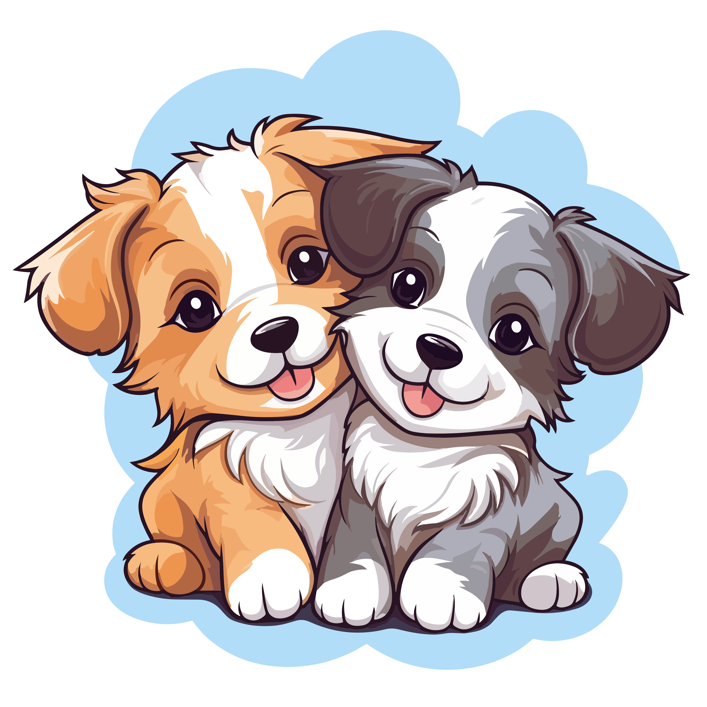

-
 12 de octubre, 2024
12 de octubre, 2024
Adopción Masiva
El próximo evento de adopción masiva en Caniños tiene como objetivo encontrar hogar para más de 30 perros que han sido rescatados de situaciones difíciles. Se organizarán actividades lúdicas para toda la familia, donde los asistentes podrán conocer a los perros en adopción y aprender sobre el proceso de adopción responsable.
Además, se contará con la presencia de especialistas que brindarán charlas sobre el cuidado y bienestar animal, junto con oportunidades para donar alimentos y recursos al refugio.
-
 25 de noviembre, 2024
25 de noviembre, 2024
Caminata Solidaria
La caminata solidaria en beneficio del refugio Caniños es un evento anual que busca recaudar fondos y concientizar a la comunidad sobre la importancia de adoptar y no comprar animales. Durante la caminata, los participantes podrán disfrutar de una jornada al aire libre acompañados de sus mascotas y otros amantes de los animales.
Habrá stands de venta de productos para mascotas, sesiones de fotos con los perros del refugio, y actividades recreativas, todo con el propósito de apoyar a los perros que aún están en espera de un hogar definitivo.
-
 10 de diciembre, 2024
10 de diciembre, 2024
Taller de Bienestar Animal
En diciembre, Caniños ofrecerá un taller de bienestar animal dirigido a adoptantes y voluntarios, donde se abordarán temas clave como la nutrición adecuada, el entrenamiento positivo y la salud general de los perros rescatados. Este taller busca empoderar a la comunidad con herramientas y conocimientos para mejorar la vida de sus mascotas.
Los asistentes tendrán la oportunidad de interactuar con expertos en el área y participar en demostraciones prácticas. También se ofrecerá asesoramiento individualizado para aquellos interesados en adoptar.
-
 15 de enero, 2025
Feria de Adopción
Caniños iniciará el año con una feria de adopción en la que se presentarán perros rescatados de diferentes edades y tamaños. Esta actividad tiene como objetivo ofrecer un espacio para que las familias puedan conocer a los perros, interactuar con ellos y llevarse a casa a un nuevo miembro familiar.
Habrá orientadores disponibles para responder preguntas sobre el proceso de adopción y el cuidado de los animales. También se ofrecerán productos y servicios para el bienestar animal, como alimentos y juguetes.
-
 20 de febrero, 2025
20 de febrero, 2025
Jornada de Voluntariado
El refugio Caniños organizará una jornada de voluntariado donde los interesados podrán colaborar en diversas actividades dentro del refugio, desde limpieza de espacios hasta el cuidado de los perros. Este evento es ideal para quienes desean ayudar activamente en el bienestar de los animales rescatados.
Se brindará a los voluntarios una inducción sobre el manejo de los perros y las tareas que deben realizar durante el evento. Al final de la jornada, se entregarán certificados de participación.
-
5 de marzo, 2025
Carrera Benéfica
El próximo marzo, Caniños llevará a cabo una carrera benéfica donde personas de todas las edades podrán participar, con o sin mascotas. Los fondos recaudados estarán destinados a mejorar las instalaciones del refugio y a brindar atención médica a los perros que más lo necesiten.
Los participantes recibirán kits con camisetas y gorros del evento, y habrá premios para los primeros lugares. Además, se realizarán actividades paralelas como concursos y rifas para los asistentes.